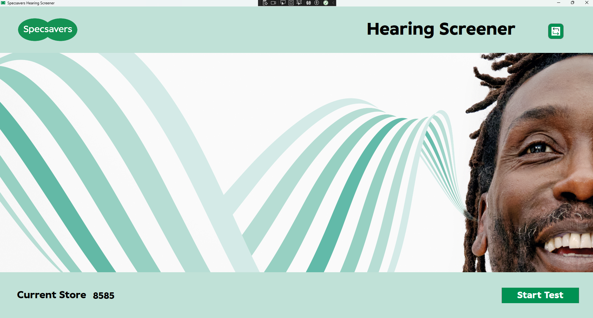
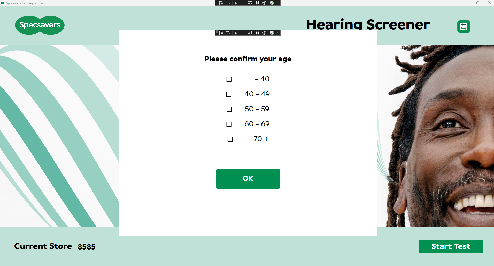
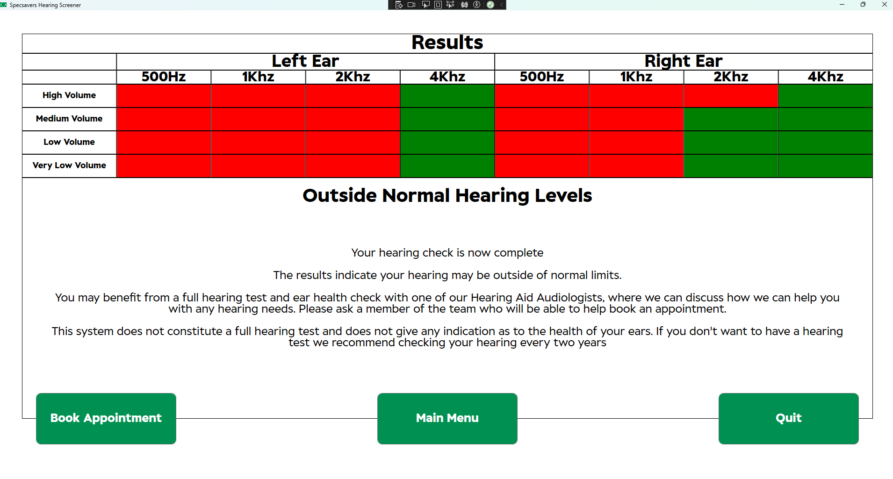

In my role as an Application Support Lead I faced into a significant unfinished task from a project. A transition had been done to take stores away from using iPads and to instead use Windows based HP tablets. As part of this project the significant majority of applications that were being used on the iPads were rebuilt for Windows. But, as the project was deemed to be an “optical” project it did not tackle applications that were being used for audiology purposes.
As the company paid a per device fee for the devices on the Mobile Device Management platform, this left my team having to pay towards a significant number of iPads that were being left in stores to facilitate two applications. My line manager challenged me to come up with solutions for how we could move away from these iPads in order to save this money. So, I began trying to build an equivalent application as a Windows WPF application, this was the basic flow design.
This needed to be able to store a limited amount of data about each use from a variety of different sites, so this neeeded to be linked to some form of data storage.
The home screen needed to be able to request a store code and ensure one was stored between sessions so this was presented if no log file was found and then stored after. Other than this the Home screen served to be a stage to be able to hand the tablet from a store user to a customer and ensure they are setup ready for the test.

using Azure.Storage.Blobs.Models;
using Azure.Storage.Blobs;
using Azure;
using System;
using System.ComponentModel;
using System.Diagnostics;
using System.IO;
using System.Text.RegularExpressions;
using System.Threading.Tasks;
using System.Windows;
namespace Hearing_Screener
{
public partial class MainWindow : Window
{
private string blobUrl = "https://storagelocation.net/data";
private string sasToken = "SAS Token";
public string StoreCode { get; set; }
private bool _isStoreCodeRequired;
public bool IsStoreCodeRequired
{
get { return _isStoreCodeRequired; }
set
{
_isStoreCodeRequired = value;
OnPropertyChanged(nameof(IsStoreCodeRequired));
}
}
public MainWindow()
{
InitializeComponent();
this.Loaded += MainWindow_Loaded;
DataContext = this;
StoreCode = LoadStoreCode();
IsStoreCodeRequired = string.IsNullOrEmpty(StoreCode);
if (IsStoreCodeRequired)
{
StoreCodeTextBox.Visibility = Visibility.Visible;
SubmitStoreCodeButton.Visibility = Visibility.Visible;
StoreCodeLabel.Visibility = Visibility.Visible;
StartTestButton.Visibility = Visibility.Collapsed;
CurrentStoreCodeLabel.Visibility = Visibility.Collapsed;
CurrentStoreCodeTextBlock.Visibility = Visibility.Collapsed;
}
else
{
StoreCodeTextBox.Visibility = Visibility.Collapsed;
SubmitStoreCodeButton.Visibility = Visibility.Collapsed;
StoreCodeLabel.Visibility = Visibility.Collapsed;
StartTestButton.Visibility = Visibility.Visible;
CurrentStoreCodeLabel.Visibility = Visibility.Visible;
CurrentStoreCodeTextBlock.Visibility = Visibility.Visible;
}
}
private async Task ReadBlobFileAsync(string blobName)
{
try
{
Uri blobUri = new Uri($"{blobUrl}/{blobName}?{sasToken}");
Debug.WriteLine($"Blob URI: {blobUri}");
BlobClient blobClient = new BlobClient(blobUri);
Debug.WriteLine("BlobClient created successfully.");
BlobDownloadInfo download = await blobClient.DownloadAsync();
using (StreamReader reader = new StreamReader(download.Content))
{
string content = await reader.ReadToEndAsync();
Debug.WriteLine("Blob content:");
Debug.WriteLine(content);
}
Debug.WriteLine("Blob read successfully.");
}
catch (RequestFailedException ex)
{
Debug.WriteLine($"Request failed: {ex.Message}, ErrorCode: {ex.ErrorCode}, Status: {ex.Status}");
MessageBox.Show($"An error occurred while reading the blob: {ex.Message}", "Error", MessageBoxButton.OK, MessageBoxImage.Error);
}
catch (Exception ex)
{
Debug.WriteLine($"An unexpected error occurred: {ex.Message}");
MessageBox.Show($"An unexpected error occurred: {ex.Message}", "Error", MessageBoxButton.OK, MessageBoxImage.Error);
}
finally
{
Debug.WriteLine("Exiting the ReadBlobFileAsync method.");
}
}
private void SubmitButton_Click(object sender, RoutedEventArgs e)
{
if (!Regex.IsMatch(StoreCode, @"^\d{4}$"))
{
MessageBox.Show("Store code must be four digits long.", "Error", MessageBoxButton.OK, MessageBoxImage.Error);
return;
}
SaveStoreCode(StoreCode);
}
private string LoadStoreCode()
{
string configFilePath = "C://Users/Public/AppData/Local/Screener/config.txt";
if (File.Exists(configFilePath))
{
return File.ReadAllText(configFilePath);
}
else
{
return string.Empty;
}
}
private void SaveStoreCode(string storeCode)
{
string configFilePath = "C://Users/Public/AppData/Local/Screener/config.txt";
string directoryPath = Path.GetDirectoryName(configFilePath);
try
{
if (!Directory.Exists(directoryPath))
{
Directory.CreateDirectory(directoryPath);
}
using (StreamWriter writer = new StreamWriter(configFilePath))
{
writer.WriteLine(storeCode);
}
StoreCodeTextBox.Visibility = Visibility.Collapsed;
SubmitStoreCodeButton.Visibility = Visibility.Collapsed;
StoreCodeLabel.Visibility = Visibility.Collapsed;
StartTestButton.Visibility = Visibility.Visible;
}
catch (Exception ex)
{
MessageBox.Show($"Error saving store code: {ex.Message}", "Error", MessageBoxButton.OK, MessageBoxImage.Error);
}
}
private void ConfirmAndDeleteConfigFile()
{
MessageBoxResult result = MessageBox.Show(
"Are you sure you want to change the store code? This will restart the application to do so.",
"Confirm Store Code Change",
MessageBoxButton.OKCancel,
MessageBoxImage.Question
);
if (result == MessageBoxResult.OK)
{
DeleteConfigFileAndRestart();
}
}
private void DeleteConfigFileAndRestart()
{
try
{
string configFilePath = "config.txt";
if (File.Exists(configFilePath))
{
File.Delete(configFilePath);
}
string exePath = Process.GetCurrentProcess().MainModule.FileName;
Process.Start(exePath);
Application.Current.Shutdown();
}
catch (Exception ex)
{
MessageBox.Show($"An error occurred: {ex.Message}", "Error", MessageBoxButton.OK, MessageBoxImage.Error);
}
}
#region INotifyPropertyChanged Implementation
public event PropertyChangedEventHandler PropertyChanged;
protected void OnPropertyChanged(string propertyName)
{
PropertyChanged?.Invoke(this, new PropertyChangedEventArgs(propertyName));
}
#endregion
private async void MainWindow_Loaded(object sender, RoutedEventArgs e)
{
this.WindowState = WindowState.Maximized;
await ReadBlobFileAsync("data.csv");
}
private void StartTestButton_Click(object sender, RoutedEventArgs e)
{
PreTestQuestionaire preTestWindow = new PreTestQuestionaire(this);
preTestWindow.ShowDialog();
}
private void ChangeStoreCodeButton_Click(object sender, RoutedEventArgs e)
{
ConfirmAndDeleteConfigFile();
}
private void StoreCodeTextBox_TextChanged(object sender, System.Windows.Controls.TextChangedEventArgs e)
{
}
}
}
The next pop up screen neeeded to confirm the customer carrying out the tests age and store this data before the test started.

using System;
using System.ComponentModel;
using System.Linq;
using System.Runtime.CompilerServices;
using System.Threading.Tasks;
using System.Windows;
using System.Windows.Controls;
namespace Hearing_Screener
{
public partial class PreTestQuestionaire : Window, INotifyPropertyChanged
{
private MainWindow _mainWindow;
public string SelectedCheckboxOption { get; private set; }
private bool _isOptionSelected;
public bool IsOptionSelected
{
get => _isOptionSelected;
set
{
if (_isOptionSelected != value)
{
_isOptionSelected = value;
OnPropertyChanged();
Console.WriteLine("isOptionSelected Complete");
}
}
}
public PreTestQuestionaire(MainWindow mainWindow)
{
InitializeComponent();
_mainWindow = mainWindow;
DataContext = this; // Set the DataContext to this instance
Console.WriteLine("Initialised");
}
private async void OkButton_Click(object sender, RoutedEventArgs e)
{
// Capture the responses
QuestionnaireResults.SelectedCheckboxOption = GetSelectedCheckboxOption();
Console.WriteLine("Responses Captured");
// Open the TestWindow
TestWindow testWindow = new TestWindow();
testWindow.Show();
// Close the MainWindow and PreTestQuestionaire asynchronously to avoid blocking the UI thread
await Task.Run(() =>
{
Dispatcher.Invoke(() => _mainWindow.Close());
Dispatcher.Invoke(() => this.Close());
Console.WriteLine("Await Task Complete");
});
}
private string GetSelectedCheckboxOption()
{
// Find the selected RadioButton
foreach (RadioButton radioButton in RadioButtonPanel.Children.OfType<RadioButton>())
{
if (radioButton.IsChecked == true)
{
// Return the content of the selected RadioButton
return radioButton.Content.ToString();
}
}
// Return a default value or empty if no RadioButton is selected
return string.Empty;
}
private void RadioButton_Checked(object sender, RoutedEventArgs e)
{
IsOptionSelected = true;
Console.WriteLine("IsOptionSelected is True");
}
public event PropertyChangedEventHandler PropertyChanged;
protected void OnPropertyChanged([CallerMemberName] string name = null)
{
PropertyChanged?.Invoke(this, new PropertyChangedEventArgs(name));
Console.WriteLine("OnPropertyChange completed");
}
}
}
The test window then starts up and displays a countdown before the test starts
Once the countdown completes the button is revealed and the sounds will begin playing for the user to press the button once they hear a sound
using System;
using System.IO;
using System.Threading.Tasks;
using System.Windows;
using System.Media;
using System.Timers;
using System.Collections.Generic;
namespace Hearing_Screener
{
public partial class TestWindow : Window
{
//The list of all the sound files being used.
private string[] soundFiles =
{
Path.Combine(Environment.CurrentDirectory, "..\\..\\Sounds\\Left_500_001.wav"),
Path.Combine(Environment.CurrentDirectory, "..\\..\\Sounds\\Left_500_002.wav"),
Path.Combine(Environment.CurrentDirectory, "..\\..\\Sounds\\Left_500_003.wav"),
Path.Combine(Environment.CurrentDirectory, "..\\..\\Sounds\\Left_500_004.wav"),
Path.Combine(Environment.CurrentDirectory, "..\\..\\Sounds\\Right_500_001.wav"),
Path.Combine(Environment.CurrentDirectory, "..\\..\\Sounds\\Right_500_002.wav"),
Path.Combine(Environment.CurrentDirectory, "..\\..\\Sounds\\Right_500_003.wav"),
Path.Combine(Environment.CurrentDirectory, "..\\..\\Sounds\\Right_500_004.wav"),
Path.Combine(Environment.CurrentDirectory, "..\\..\\Sounds\\Left_1K_001.wav"),
Path.Combine(Environment.CurrentDirectory, "..\\..\\Sounds\\Left_1K_002.wav"),
Path.Combine(Environment.CurrentDirectory, "..\\..\\Sounds\\Left_1K_003.wav"),
Path.Combine(Environment.CurrentDirectory, "..\\..\\Sounds\\Left_1K_004.wav"),
Path.Combine(Environment.CurrentDirectory, "..\\..\\Sounds\\Right_1K_001.wav"),
Path.Combine(Environment.CurrentDirectory, "..\\..\\Sounds\\Right_1K_002.wav"),
Path.Combine(Environment.CurrentDirectory, "..\\..\\Sounds\\Right_1K_003.wav"),
Path.Combine(Environment.CurrentDirectory, "..\\..\\Sounds\\Right_1K_004.wav"),
Path.Combine(Environment.CurrentDirectory, "..\\..\\Sounds\\Left_2K_001.wav"),
Path.Combine(Environment.CurrentDirectory, "..\\..\\Sounds\\Left_2K_002.wav"),
Path.Combine(Environment.CurrentDirectory, "..\\..\\Sounds\\Left_2K_003.wav"),
Path.Combine(Environment.CurrentDirectory, "..\\..\\Sounds\\Left_2K_004.wav"),
Path.Combine(Environment.CurrentDirectory, "..\\..\\Sounds\\Right_2K_001.wav"),
Path.Combine(Environment.CurrentDirectory, "..\\..\\Sounds\\Right_2K_002.wav"),
Path.Combine(Environment.CurrentDirectory, "..\\..\\Sounds\\Right_2K_003.wav"),
Path.Combine(Environment.CurrentDirectory, "..\\..\\Sounds\\Right_2K_004.wav"),
Path.Combine(Environment.CurrentDirectory, "..\\..\\Sounds\\Left_4K_001.wav"),
Path.Combine(Environment.CurrentDirectory, "..\\..\\Sounds\\Left_4K_002.wav"),
Path.Combine(Environment.CurrentDirectory, "..\\..\\Sounds\\Left_4K_003.wav"),
Path.Combine(Environment.CurrentDirectory, "..\\..\\Sounds\\Left_4K_004.wav"),
Path.Combine(Environment.CurrentDirectory, "..\\..\\Sounds\\Right_4K_001.wav"),
Path.Combine(Environment.CurrentDirectory, "..\\..\\Sounds\\Right_4K_002.wav"),
Path.Combine(Environment.CurrentDirectory, "..\\..\\Sounds\\Right_4K_003.wav"),
Path.Combine(Environment.CurrentDirectory, "..\\..\\Sounds\\Right_4K_004.wav"),
/* Add more sound file paths as needed */
};
//This index tracks how many sounds have been played to allow it to play them sequentially
private int currentSoundIndex = 0;
//this is the refernece for the sound player
private SoundPlayer soundPlayer;
//detect if a sound is being played
private bool isSoundPlaying = false;
//timer to use as part of detecting if button is pressed whilst sound is playing
private Timer soundTimer;
//The variables that confirm if the button was pressed whilst each sound was playing
private List<bool> soundButtonPresses = new List<bool>();
//Load the Window
public TestWindow()
{
InitializeComponent();
//A reference to this window to allow it to run maximised
this.Loaded += TestWindow_Loaded;
//set all of the results to false
for (int i = 0; i < soundFiles.Length; i++)
{
soundButtonPresses.Add(false);
}
//Initialise the sound player
soundPlayer = new SoundPlayer();
//run the countdown function
StartCountdown();
}
//Function to maximise the Window
private void TestWindow_Loaded(object sender, RoutedEventArgs e)
{
this.WindowState = WindowState.Maximized;
}
//Countdown Function also contains the delay and trigger for the sound function and the actions taken after all sounds complete
private async void StartCountdown()
{
//use AudioManager.cs to fore volume to 100 and unmute
AudioManager.SetVolumeAndUnmute();
//Run the on screen countdown
for (int i = 3; i > 0; i--)
{
CountdownLabel.Text = i.ToString();
await Task.Delay(1000);
}
/* Need to Set the system volume to 100% and ensure it is not muted*/
//Hide the countdown text in UI
CountdownLabel.Visibility = Visibility.Hidden;
//Show the Button in the UI
SoundButton.Visibility = Visibility.Visible;
// Enable the button after countdown
SoundButton.IsEnabled = true;
// Loop to play all the sounds one after another, currently set up to play 32 sounds then exit the loop!!!
for (int i = 0; i < 32; i++)
{
// Generate a random delay between 5 and 12 seconds
Random random = new Random();
// Delay in milliseconds
int delay = random.Next(5000, 12001);
await Task.Delay(delay);
// Call a method to play the sound here
PlaySound();
// Start the sound timer
soundTimer = new Timer(3000); // 3 seconds
soundTimer.Elapsed += (sender, e) => { isSoundPlaying = false; };
soundTimer.AutoReset = false;
soundTimer.Start();
// Set isSoundPlaying to true while the sound is playing
isSoundPlaying = true;
}
//wait to allow the final sound clip to finish playing before doing anything
await Task.Delay(5000);
//deactivate the sound button
SoundButton.IsEnabled = false;
//hide the sound button from the UI
SoundButton.Visibility = Visibility.Hidden;
//Show the Test Complete Text
TestEndLabel.Visibility = Visibility.Visible;
//Reveal the Test Complete Button
CompleteTestButton.Visibility = Visibility.Visible;
//Activate the Test complete button
CompleteTestButton.IsEnabled = true;
}
//The functionality for pressing the button when a sound is heard
private void SoundButton_Click(object sender, RoutedEventArgs e)
{
if (isSoundPlaying)
{
// Button was pressed while a sound was playing
Console.WriteLine("Button pressed during sound playback!");
// Set the corresponding value to true
soundButtonPresses[currentSoundIndex] = true;
}
else
{
// Button was pressed outside of sound playback window
Console.WriteLine("Button pressed outside of sound playback window.");
}
}
//debugging function to see how the button press success update
private void DebugPrintButtonPresses()
{
Console.WriteLine("Button Presses:");
for (int i = 0; i < soundButtonPresses.Count; i++)
{
Console.WriteLine($"Sound {i + 1}: {(soundButtonPresses[i] ? "Pressed" : "Not Pressed")}");
}
}
//functionality for the button to register the test complete and move
private void CompleteTestButton_Click(object sender, RoutedEventArgs e)
{
SoundButtonData data = new SoundButtonData();
data.SoundButtonPresses = soundButtonPresses;
ResultsWindow resultsWindow = new ResultsWindow(soundButtonPresses);
resultsWindow.DataContext = data; // Set DataContext to the SoundButtonData instance
resultsWindow.Show();
this.Close();
}
//functionality to play sounds
private void PlaySound()
{
// Check if we have played all the sounds
if (currentSoundIndex >= soundFiles.Length)
{
// Handle case where all sounds have been played
return;
}
// Get the path of the current sound file
string soundFilePath = soundFiles[currentSoundIndex];
// Play the sound file
soundPlayer.SoundLocation = soundFilePath;
soundPlayer.Load();
soundPlayer.Play();
// Set isSoundPlaying to true while the sound is playing
isSoundPlaying = true;
// Start the sound timer
soundTimer = new Timer(3000); // 3 seconds
soundTimer.Elapsed += (sender, e) =>
{
isSoundPlaying = false;
DebugPrintButtonPresses(); // Print button presses to console
// Increment the index for the next sound
currentSoundIndex++;
};
soundTimer.AutoReset = false;
soundTimer.Start();
}
public class SoundButtonData
{
public List<bool> SoundButtonPresses { get; set; }
}
}
}
The results show on a grid at the end, with green for a success and red for a failure on each sound. A general text is displayed based on whether this is considered a success or failure. The user can then chose to either carry out a new test, book an apopointment or exit the application.

using System;
using System.IO;
using System.Windows;
using System.Collections.Generic;
using System.Diagnostics;
using static Hearing_Screener.TestWindow;
using System.Linq;
using System.ComponentModel;
using System.Text;
using System.Threading.Tasks;
using Azure.Storage.Blobs;
using Azure.Storage.Blobs.Specialized;
using Azure.Core.Diagnostics;
using Azure;
namespace Hearing_Screener
{
public partial class ResultsWindow : Window
{
private bool _testResult;
private bool AppointmentButtonPressed = false;
private readonly string blobUrl = "https://******************.blob.core.windows.net/data";
private readonly string sasToken = "sv=********************************************************************************************************************************************************";
public ResultsWindow(List<bool> soundButtonPresses)
{
InitializeComponent();
AzureEventSourceListener listener = AzureEventSourceListener.CreateConsoleLogger();
DataContext = new SoundButtonData { SoundButtonPresses = soundButtonPresses };
Debug.WriteLine($"DataContext: {DataContext}");
_testResult = IsTestSuccessful(soundButtonPresses);
Debug.WriteLine(_testResult);
UpdateVisibility(_testResult);
this.Loaded += ResultsWindow_Loaded;
// Display true/false results in the DataGrid
}
private void UpdateVisibility(bool _testResult)
{
if (_testResult)
{
PosOutcomeText.Visibility = Visibility.Visible;
PosOutcomeHeader.Visibility = Visibility.Visible;
NegOutcomeHeader.Visibility = Visibility.Collapsed;
NegOutcomeText.Visibility = Visibility.Collapsed;
}
else
{
PosOutcomeText.Visibility = Visibility.Collapsed;
PosOutcomeHeader.Visibility = Visibility.Collapsed;
NegOutcomeHeader.Visibility = Visibility.Visible;
NegOutcomeText.Visibility = Visibility.Visible;
}
}
private void ResultsWindow_Loaded(object sender, RoutedEventArgs e)
{
this.WindowState = WindowState.Maximized;
}
private bool IsTestSuccessful(List<bool> soundButtonPresses)
{
// If any sound button press is false, the test is a failure
return soundButtonPresses.All(pressed => pressed);
}
private void MenuButton_Click(object sender, RoutedEventArgs e)
{
AddDataToCSV(_testResult, AppointmentButtonPressed);
MainWindow mainWindow = new MainWindow();
mainWindow.Show();
this.Close();
}
private async void QuitButton_Click(object sender, RoutedEventArgs e)
{
AddDataToCSV(_testResult, AppointmentButtonPressed);
await CompletePendingUploadsAsync();
this.Close();
}
private async void AppointmentButton_Click(object sender, RoutedEventArgs e)
{
try
{
AppointmentButtonPressed = true;
AddDataToCSV(_testResult, AppointmentButtonPressed);
await CompletePendingUploadsAsync();
// Close the current window
this.Close();
// Open the default web browser with the specified URL
string url = "https://www.specsavers.co.uk/stores?hearing=true"; // Replace this with your desired website URL
Process.Start(url);
}
catch (Exception ex)
{
MessageBox.Show($"An error occurred: {ex.Message}", "Error", MessageBoxButton.OK, MessageBoxImage.Error);
}
}
private async Task CompletePendingUploadsAsync()
{
// Logic to ensure that pending uploads are completed
// This is a placeholder, replace with your actual method
await Task.Delay(1000); // Simulate waiting for async tasks to complete
}
//Establish connection to Azure
private async void AddDataToCSV(bool testResult, bool AppointmentButtonPressed)
{
try
{
// Read store code from config.txt
string configFilePath = "config.txt";
string storeCode = File.ReadAllText(configFilePath).Trim();
Debug.WriteLine($"Store Code: {storeCode}");
// Prepare data
string currentDate = DateTime.Now.ToString("yyyy-MM-dd");
string currentTime = DateTime.Now.ToString("HH-mm-ss"); // Changed format to avoid issues with filename
string checkboxOption = QuestionnaireResults.SelectedCheckboxOption;
Debug.WriteLine($"Date: {currentDate}, Time: {currentTime}, Checkbox Option: {checkboxOption}");
// Create the data row
string header = "Store Code,Date,Time,Test Result,Booking,Age";
string dataRow = $"{storeCode},{currentDate},{currentTime},{testResult},{AppointmentButtonPressed},{checkboxOption}";
Debug.WriteLine($"Data Row: {dataRow}");
// Generate the file name
string fileName = $"{storeCode}_{currentDate}_{currentTime}.csv";
Debug.WriteLine($"File Name: {fileName}");
// Upload the data as a new file in the Blob Storage
await UploadFileToBlobAsync(fileName, header + Environment.NewLine + dataRow);
}
catch (Exception ex)
{
Debug.WriteLine($"An error occurred: {ex.Message}");
MessageBox.Show($"An error occurred: {ex.Message}", "Error", MessageBoxButton.OK, MessageBoxImage.Error);
}
}
private async Task UploadFileToBlobAsync(string fileName, string fileContent)
{
try
{
// Create a BlobClient to interact with the blob
Uri blobUri = new Uri($"{blobUrl}/{fileName}?{sasToken}");
Debug.WriteLine($"Blob URI: {blobUri}");
BlobClient blobClient = new BlobClient(blobUri);
Debug.WriteLine("BlobClient created successfully.");
// Convert the file content to a byte array
byte[] fileBytes = Encoding.UTF8.GetBytes(fileContent);
Debug.WriteLine($"File content size: {fileBytes.Length} bytes");
// Upload the file to the Blob Storage
using (MemoryStream stream = new MemoryStream(fileBytes))
{
// Perform the upload operation
var response = await blobClient.UploadAsync(stream, overwrite: false);
Debug.WriteLine($"Upload response: Status Code = {response.GetRawResponse().Status}, Reason = {response.GetRawResponse().ReasonPhrase}");
}
Debug.WriteLine("File uploaded successfully.");
}
catch (RequestFailedException ex)
{
Debug.WriteLine($"Request failed: {ex.Message}, ErrorCode: {ex.ErrorCode}, Status: {ex.Status}");
MessageBox.Show($"An error occurred while uploading the file to the blob: {ex.Message}", "Error", MessageBoxButton.OK, MessageBoxImage.Error);
}
catch (Exception ex)
{
Debug.WriteLine($"An unexpected error occurred: {ex.Message}");
MessageBox.Show($"An unexpected error occurred: {ex.Message}", "Error", MessageBoxButton.OK, MessageBoxImage.Error);
}
finally
{
Debug.WriteLine("Exiting the UploadFileToBlobAsync method.");
}
}
/** private void AddDataToDataCSV(bool testResult, bool AppointmentButtonPressed)
{
try
{
// Read store code from config.txt
string configFilePath = "C://Users/Public/AppData/Local/Screener/config.txt";
string storeCode = File.ReadAllText(configFilePath).Trim();
// Prepare data
string currentDate = DateTime.Now.ToString("yyyy-MM-dd");
string currentTime = DateTime.Now.ToString("HH:mm:ss");
string checkboxOption = QuestionnaireResults.SelectedCheckboxOption;
// Create CSV file if it doesn't exist
string csvFilePath = "data.csv";
if (!File.Exists(csvFilePath))
{
// Write header row
string header = "Store Code,Date,Time,Test Result,Booking, Age";
File.WriteAllText(csvFilePath, header + Environment.NewLine);
}
// Append data to CSV file
using (StreamWriter writer = File.AppendText(csvFilePath))
{
// Write data row
string dataRow = $"{storeCode},{currentDate},{currentTime},{testResult},{AppointmentButtonPressed},{checkboxOption}";
writer.WriteLine(dataRow);
}
//MessageBox.Show("Data added to CSV file successfully.", "Success", MessageBoxButton.OK, MessageBoxImage.Information);
}
catch (Exception ex)
{
MessageBox.Show($"An error occurred: {ex.Message}", "Error", MessageBoxButton.OK, MessageBoxImage.Error);
}
} **/
}
}